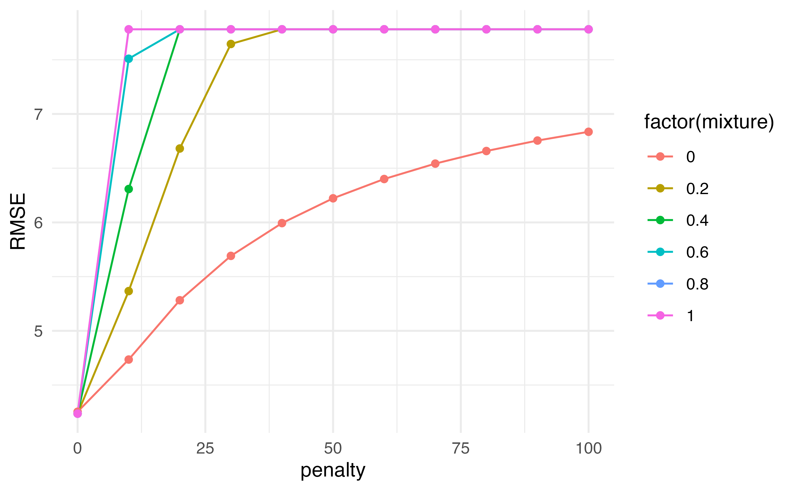
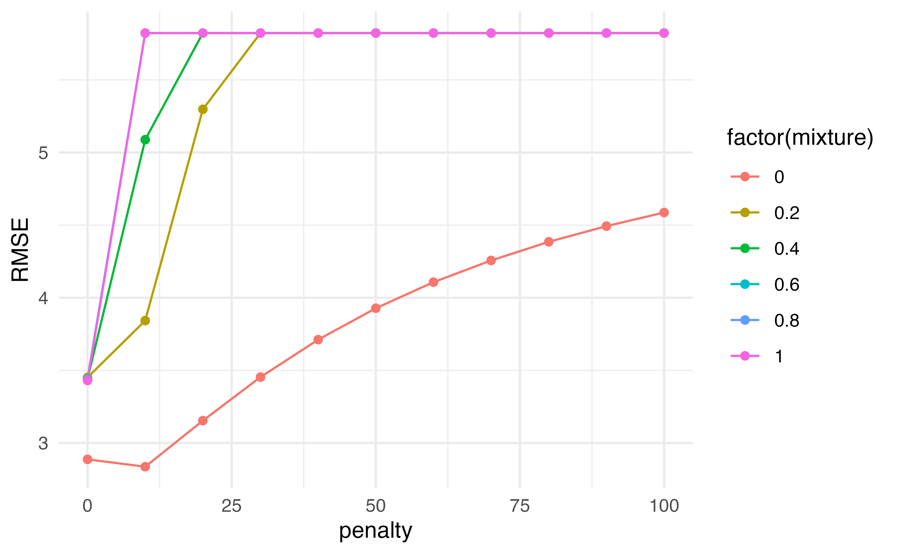

Application Exercise02:00
Linear Regression Model Specification (regression)
Computational engine: lm last_fit() and specify the splittrain data from the splitrmse as before) you can just use collect_metrics() and it will automatically calculate the metrics on the test data from the splitset.seed(100)
Auto_split <- initial_split(Auto, prop = 0.5)
lm_fit <- last_fit(lm_spec,
mpg ~ horsepower,
split = Auto_split)
lm_fit |>
collect_metrics() # A tibble: 2 × 4
.metric .estimator .estimate .config
<chr> <chr> <dbl> <chr>
1 rmse standard 4.96 Preprocessor1_Model1
2 rsq standard 0.613 Preprocessor1_Model1What does this mean?
What would happen if we scale before doing cross-validation? Will we get different answers?
recipe()!recipe() function along with step_*() functions, we can specify preprocessing steps and R will automagically apply them to each fold appropriately.recipe gets plugged into the fit_resamples() functionAuto_cv <- vfold_cv(Auto, v = 5)
rec <- recipe(mpg ~ horsepower, data = Auto) |>
step_scale(horsepower)
results <- fit_resamples(lm_spec,
preprocessor = rec,
resamples = Auto_cv)
results |>
collect_metrics()# A tibble: 2 × 6
.metric .estimator mean n std_err .config
<chr> <chr> <dbl> <int> <dbl> <chr>
1 rmse standard 4.91 5 0.233 Preprocessor1_Model1
2 rsq standard 0.615 5 0.0313 Preprocessor1_Model1all_predictors() short hand.rec <- recipe(mpg ~ horsepower + displacement + weight, data = Auto) |>
step_scale(all_predictors())
results <- fit_resamples(lm_spec,
preprocessor = rec,
resamples = Auto_cv)
results |>
collect_metrics()# A tibble: 2 × 6
.metric .estimator mean n std_err .config
<chr> <chr> <dbl> <int> <dbl> <chr>
1 rmse standard 4.24 5 0.206 Preprocessor1_Model1
2 rsq standard 0.711 5 0.0148 Preprocessor1_Model1Application ExerciseHitters dataset by running ?Hitters in the ConsoleSalary from all of the other 19 variables in this dataset. Create a visualization of Salary.06:00
Application Exercise06:00
When specifying your model, you can indicate whether you would like to use ridge, lasso, or elastic net. We can write a general equation to minimize:
\[RSS + \lambda\left((1-\alpha)\sum_{i=1}^p\beta_j^2+\alpha\sum_{i=1}^p|\beta_j|\right)\]
glmnetlinear_reg() function has two additional parameters, penalty and mixturepenalty is \(\lambda\) from our equation.mixture is a number between 0 and 1 representing \(\alpha\)\[RSS + \lambda\left((1-\alpha)\sum_{i=1}^p\beta_j^2+\alpha\sum_{i=1}^p|\beta_j|\right)\]
What would we set mixture to in order to perform Ridge regression?
Application Exerciseset.seed(1)Hitters dataset06:00
\[RSS + \lambda\left((1-\alpha)\sum_{i=1}^p\beta_j^2+\alpha\sum_{i=1}^p|\beta_j|\right)\]
tune() for the the penalty and the mixture. Those are the things we want to vary!fit_resamples() we are going to use tune_grid()# A tibble: 132 × 8
penalty mixture .metric .estimator mean n std_err .config
<dbl> <dbl> <chr> <chr> <dbl> <int> <dbl> <chr>
1 0 0 rmse standard 4.25 5 0.217 Preprocessor1_Model01
2 0 0 rsq standard 0.710 5 0.0171 Preprocessor1_Model01
3 10 0 rmse standard 4.74 5 0.246 Preprocessor1_Model02
4 10 0 rsq standard 0.706 5 0.0193 Preprocessor1_Model02
5 20 0 rmse standard 5.28 5 0.255 Preprocessor1_Model03
6 20 0 rsq standard 0.705 5 0.0194 Preprocessor1_Model03
7 30 0 rmse standard 5.69 5 0.258 Preprocessor1_Model04
8 30 0 rsq standard 0.705 5 0.0195 Preprocessor1_Model04
9 40 0 rmse standard 5.99 5 0.260 Preprocessor1_Model05
10 40 0 rsq standard 0.705 5 0.0195 Preprocessor1_Model05
# … with 122 more rows# A tibble: 66 × 8
penalty mixture .metric .estimator mean n std_err .config
<dbl> <dbl> <chr> <chr> <dbl> <int> <dbl> <chr>
1 0 0.6 rmse standard 4.24 5 0.207 Preprocessor1_Model34
2 0 0.4 rmse standard 4.24 5 0.207 Preprocessor1_Model23
3 0 1 rmse standard 4.24 5 0.207 Preprocessor1_Model56
4 0 0.8 rmse standard 4.24 5 0.207 Preprocessor1_Model45
5 0 0.2 rmse standard 4.24 5 0.207 Preprocessor1_Model12
6 0 0 rmse standard 4.25 5 0.217 Preprocessor1_Model01
7 10 0 rmse standard 4.74 5 0.246 Preprocessor1_Model02
8 20 0 rmse standard 5.28 5 0.255 Preprocessor1_Model03
9 10 0.2 rmse standard 5.37 5 0.258 Preprocessor1_Model13
10 30 0 rmse standard 5.69 5 0.258 Preprocessor1_Model04
# … with 56 more rows# A tibble: 66 × 8
penalty mixture .metric .estimator mean n std_err .config
<dbl> <dbl> <chr> <chr> <dbl> <int> <dbl> <chr>
1 0 0.6 rmse standard 4.24 5 0.207 Preprocessor1_Model34
2 0 0.4 rmse standard 4.24 5 0.207 Preprocessor1_Model23
3 0 1 rmse standard 4.24 5 0.207 Preprocessor1_Model56
4 0 0.8 rmse standard 4.24 5 0.207 Preprocessor1_Model45
5 0 0.2 rmse standard 4.24 5 0.207 Preprocessor1_Model12
6 0 0 rmse standard 4.25 5 0.217 Preprocessor1_Model01
7 10 0 rmse standard 4.74 5 0.246 Preprocessor1_Model02
8 20 0 rmse standard 5.28 5 0.255 Preprocessor1_Model03
9 10 0.2 rmse standard 5.37 5 0.258 Preprocessor1_Model13
10 30 0 rmse standard 5.69 5 0.258 Preprocessor1_Model04
# … with 56 more rowsWhich would you choose?
results |>
collect_metrics() |>
filter(.metric == "rmse") |>
ggplot(aes(penalty, mean, color = factor(mixture), group = factor(mixture))) +
geom_line() +
geom_point() +
labs(y = "RMSE")

Application ExerciseHitters cross validation object and recipe created in the previous exercise, use tune_grid to pick the optimal penalty and mixture values.tune_grid function. Then use collect_metrics and filter to only include the RSME estimates.08:00
last_fit() with the selected parameters, specifying the split data so that it is evaluated on the left out test sampleauto_split <- initial_split(Auto, prop = 0.5)
auto_train <- training(auto_split)
auto_cv <- vfold_cv(auto_train, v = 5)
rec <- recipe(mpg ~ horsepower + displacement + weight, data = auto_train) |>
step_scale(all_predictors())
tuning <- tune_grid(penalty_spec,
rec,
grid = grid,
resamples = auto_cv)
tuning |>
collect_metrics() |>
filter(.metric == "rmse") |>
arrange(mean)# A tibble: 66 × 8
penalty mixture .metric .estimator mean n std_err .config
<dbl> <dbl> <chr> <chr> <dbl> <int> <dbl> <chr>
1 0 1 rmse standard 4.52 5 0.105 Preprocessor1_Model56
2 0 0.6 rmse standard 4.52 5 0.105 Preprocessor1_Model34
3 0 0.8 rmse standard 4.52 5 0.106 Preprocessor1_Model45
4 0 0.2 rmse standard 4.53 5 0.104 Preprocessor1_Model12
5 0 0.4 rmse standard 4.53 5 0.104 Preprocessor1_Model23
6 0 0 rmse standard 4.54 5 0.132 Preprocessor1_Model01
7 10 0 rmse standard 5.01 5 0.232 Preprocessor1_Model02
8 20 0 rmse standard 5.54 5 0.266 Preprocessor1_Model03
9 10 0.2 rmse standard 5.63 5 0.271 Preprocessor1_Model13
10 30 0 rmse standard 5.94 5 0.280 Preprocessor1_Model04
# … with 56 more rowsfinal_spec <- linear_reg(penalty = 0, mixture = 0) |>
set_engine("glmnet")
fit <- last_fit(final_spec,
rec,
split = auto_split)
fit |>
collect_metrics()# A tibble: 2 × 4
.metric .estimator .estimate .config
<chr> <chr> <dbl> <chr>
1 rmse standard 4.00 Preprocessor1_Model1
2 rsq standard 0.726 Preprocessor1_Model1workflow() to combine the recipe and the model specification to pass to a fit object.Application Exerciseworkflow03:00
Dr. Lucy D’Agostino McGowan adapted from Alison Hill’s Introduction to ML with the Tidyverse